第一章 認識半導體：技術基礎、產品類型與產業重要性
1.1 半導體、晶片與積體電路
「半導體（semiconductor）」一詞在產業新聞中常被用來泛指晶片及整體半導體產業，但從技術層面來看，半導體首先是一類導電能力介於導體與絕緣體之間，且導電性可以受到控制的材料。目前最普遍的半導體材料是矽（silicon）；透過加入特定雜質、施加電場等方式，可以改變其電性，進而控制電流通過與否（McKinsey & Company, 2025）。
半導體材料可以進一步製成二極體、電晶體（transistor）及積體電路（integrated circuit, IC）等元件。其中，積體電路是將大量電晶體及其他電子元件整合於一小片半導體材料上的電路；「晶片（chip）」則是目前產業與日常語言中對這類微型積體電路的常見稱呼。
三者可以簡單區分如下：
| 名詞 | 英文 | 基本意義 |
| 半導體 | Semiconductor | 可控制導電性的材料；產業語境中亦泛指整體晶片產業 |
| 積體電路 | Integrated Circuit, IC | 將大量電子元件整合在半導體材料上的電路 |
| 晶片 | Chip | 對積體電路及半導體元件的常用稱呼 |
因此，手機中的處理器、DRAM、NAND Flash、電源管理IC等雖然功能不同，都屬於利用半導體材料製成的晶片。
1.2 電晶體、裸晶與矽晶圓
現代晶片的核心基本元件是電晶體（transistor）。在數位電路中，電晶體可以視為極微小的電子開關，透過控制電流的開與關表示數位資訊中的0與1；大量電晶體再經由特定方式排列與連接，形成邏輯運算與資料處理功能。現代高階晶片可以整合數十億甚至更多電晶體，因此如何在有限面積內整合更多元件、提高效能並降低功耗，一直是半導體技術發展的重要方向。
晶片並不是一顆一顆單獨製造，而是在晶圓（wafer）上批量形成。矽原料經提純、形成單晶矽柱後，再被切割並加工成圓形且表面高度平整的矽晶圓。晶圓進入晶圓廠（fab）後，透過微影、蝕刻、沉積、離子植入等程序，在同一片晶圓上製造大量晶片。
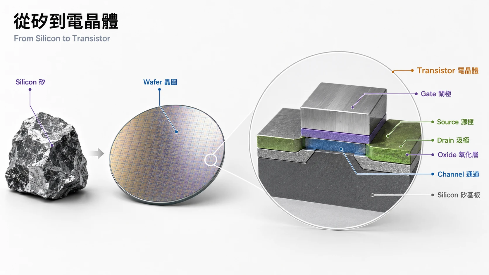
完成製造後，整片晶圓會被切割成許多獨立的小塊，每一塊尚未封裝的晶片稱為裸晶（die）。目前半導體製造常見的晶圓尺寸為300毫米；依晶片本身面積不同，一片晶圓可能包含數十顆到數千顆裸晶。
一片晶圓能取得多少可用晶片，不只取決於晶圓尺寸和晶片面積。半導體製造包含大量精密步驟，即使非常微小的污染、製程偏差或缺陷，都可能使部分裸晶無法正常運作。能正常工作的裸晶占全部裸晶的比例稱為良率（yield）。ASML指出，現代晶片可包含多達約100層的結構，各層必須以奈米尺度精準對位，而極小的灰塵或異物就可能使晶片失效。
因此可以將基本關係理解為：
電晶體 → 組成晶片電路 → 多顆晶片同時製造於晶圓 → 晶圓切割 → 裸晶（die）→ 封裝後成為可使用的晶片。
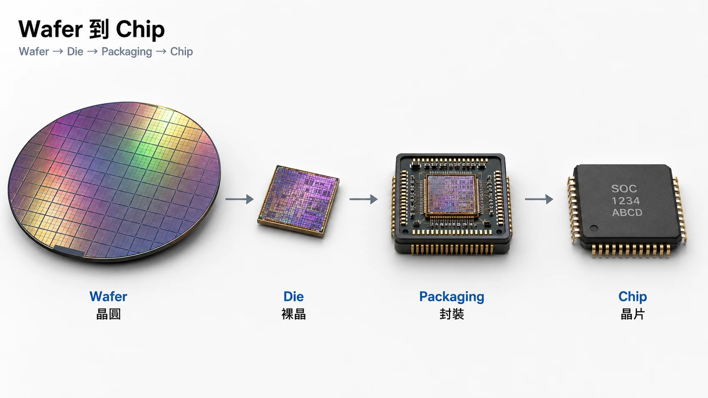
1.3 半導體的主要產品類型
半導體並不是單一產品。依功能與應用不同，可以區分為邏輯晶片、記憶體、類比晶片、功率半導體，以及其他特殊用途晶片。本章主要介紹四個常見類別。
1.3.1 邏輯晶片（Logic）
邏輯晶片主要負責運算、處理資訊與執行指令，可以視為電子系統的「大腦」。常見產品包括：
CPU（Central Processing Unit，中央處理器）
GPU（Graphics Processing Unit，圖形處理器）
NPU（Neural Processing Unit，神經網路處理器）
ASIC（Application-Specific Integrated Circuit，特殊應用積體電路）
SoC（System on a Chip，系統單晶片）
CPU主要處理通用運算；GPU原本主要用於圖形運算，但由於適合大量平行運算，也成為AI訓練與推論的重要處理器。SoC則將CPU、GPU、通訊、影像等不同功能整合於單一晶片中，是智慧型手機等裝置常見的設計方式。
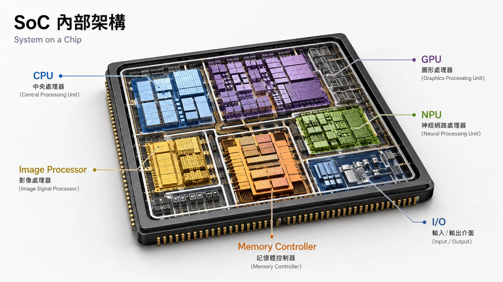
邏輯晶片也是先進製程的重要應用領域之一。高效能運算與行動裝置通常希望在有限晶片面積內整合更多電晶體，同時提高效能並控制能源消耗，因此持續推動製程微縮與晶片設計創新（McKinsey & Company, 2025）。
1.3.2 記憶體：DRAM與NAND Flash
記憶體晶片主要負責儲存資料，其中最常見的兩類為DRAM與NAND Flash。
DRAM（Dynamic Random Access Memory，動態隨機存取記憶體）屬於揮發性記憶體，主要存放CPU或GPU正在處理的資料，特色是存取速度快，但斷電後資料會消失。例如電腦執行程式時使用的主記憶體即以DRAM為主。近年AI伺服器大量使用的HBM（High Bandwidth Memory，高頻寬記憶體）也是以DRAM技術為基礎，透過堆疊及高密度互連提高資料傳輸頻寬。
NAND Flash則屬於非揮發性記憶體，斷電後仍能保存資料，因此大量應用於SSD、智慧型手機、USB隨身碟與記憶卡。簡單而言，DRAM主要負責運算過程中的暫時資料，NAND則主要負責長期儲存。
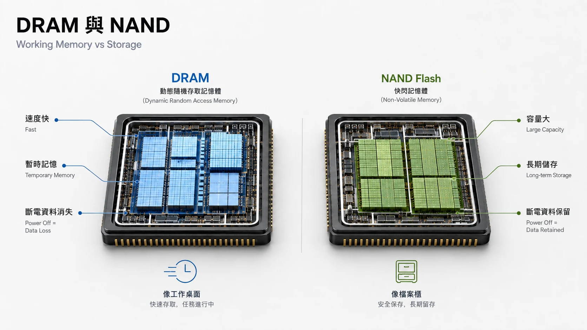
| DRAM | NAND Flash | |
| 主要用途 | 暫存運算中的資料 | 長期儲存資料 |
| 斷電後 | 資料消失 | 資料保留 |
| 主要特性 | 高速、低延遲 | 高容量、低單位儲存成本 |
| 常見應用 | PC、伺服器、HBM | SSD、手機、記憶卡 |
1.3.3 類比晶片與功率半導體
類比晶片（Analog IC）主要負責處理現實世界中連續變化的電訊號，例如聲音、溫度、壓力、光線及電壓。常見產品包括放大器、類比數位轉換器（ADC）、電源管理IC（PMIC）及各種感測器介面。相較於數位晶片主要處理0與1，類比晶片扮演連接物理世界與數位系統的重要角色。ASML亦將晶片依訊號形式區分為digital、analog與mixed-signal等類型。
功率半導體（Power Semiconductor）則用於控制與轉換電能，例如調整電壓、控制馬達或將直流電轉換為交流電，廣泛應用於電動車、充電設備、工業設備與能源系統。除了傳統矽材料外，碳化矽（SiC）及氮化鎵（GaN）等材料也日益應用於高功率、高效率的電力電子系統（McKinsey & Company, 2025）。
1.4 從設計到成品：晶片的基本製造流程
一顆晶片從概念變成可以安裝於手機、汽車或伺服器中的產品，大致經歷：
晶片設計 → 晶圓製造 → 晶圓測試與切割 → 封裝 → 最終測試
首先，IC設計公司根據產品需求規劃晶片架構與功能，再利用EDA（Electronic Design Automation）軟體設計並驗證電路。完成設計後，版圖資料會送往晶圓製造端準備量產。
晶圓製造則是在矽晶圓表面反覆進行大量精密製程。ASML將其中幾項核心步驟整理為沉積（deposition）、光阻塗布（photoresist coating）、微影（lithography）、蝕刻（etching）、離子植入（ion implantation）以及封裝（packaging）。整個晶片製造流程涉及數百乃至數千個步驟，從設計到量產可能歷時數月（ASML, 2023）。
其中，微影（photolithography）是將電路圖案轉移到晶圓上的關鍵程序。光線透過光罩（mask／reticle）將縮小後的圖案投影至覆有感光材料的晶圓表面，再經後續蝕刻等程序形成實際結構。先進製程的部分關鍵層使用EUV（Extreme Ultraviolet，極紫外光）微影，而其他較大尺寸的圖案仍大量使用DUV（Deep Ultraviolet，深紫外光）設備。
晶圓完成後會先接受測試，再切割成單一裸晶。合格裸晶接著進行封裝，以保護晶片、提供與外部電路的連接並協助散熱，最後再進行功能及品質測試，才成為可交付客戶使用的產品（ASML, 2023）。
這也形成半導體產業的重要專業分工：有些公司專注晶片設計，有些專門製造晶片，另有企業提供設備、材料或封裝測試服務。完整的產業結構將於第二章進一步說明。
1.5 製程節點：先進製程與成熟製程
半導體新聞中常見的「28奈米」、「7奈米」、「5奈米」及「3奈米」通常稱為製程節點（process node）。
奈米（nanometer, nm）本身是長度單位，1奈米等於十億分之一公尺。然而，今天所稱的「3奈米晶片」並不代表晶片中的某一個元件尺寸恰好為3奈米。早期製程節點名稱曾與特定電晶體實體尺寸有較直接關係，但隨著電晶體結構與製程複雜化，產業早已不再以單一實體尺寸直接命名節點。現代節點名稱較適合作為不同製程技術世代的標示（Intel, 2025）。
因此，不能單純依「奈米數字大小」比較不同公司的製程能力。實際比較還需考量電晶體密度、效能、功耗、面積、成本及良率等條件。
產業通常將較新的、高度微縮的邏輯製程稱為先進製程（advanced process），而已發展成熟並長期量產的製程則常稱為成熟製程（mature process）。兩者並沒有永久固定的奈米分界，因為製程世代會持續演進。
先進製程主要應用於CPU、GPU、AI加速器及高階行動處理器等對效能、功耗與晶片密度要求較高的產品；成熟製程則仍大量應用於微控制器、類比IC、電源管理、車用與工業晶片等領域。這意味著製程愈新並不代表對所有產品都愈適合。晶片設計公司必須根據產品的效能需求、成本、可靠度及生命週期選擇合適的製程技術。
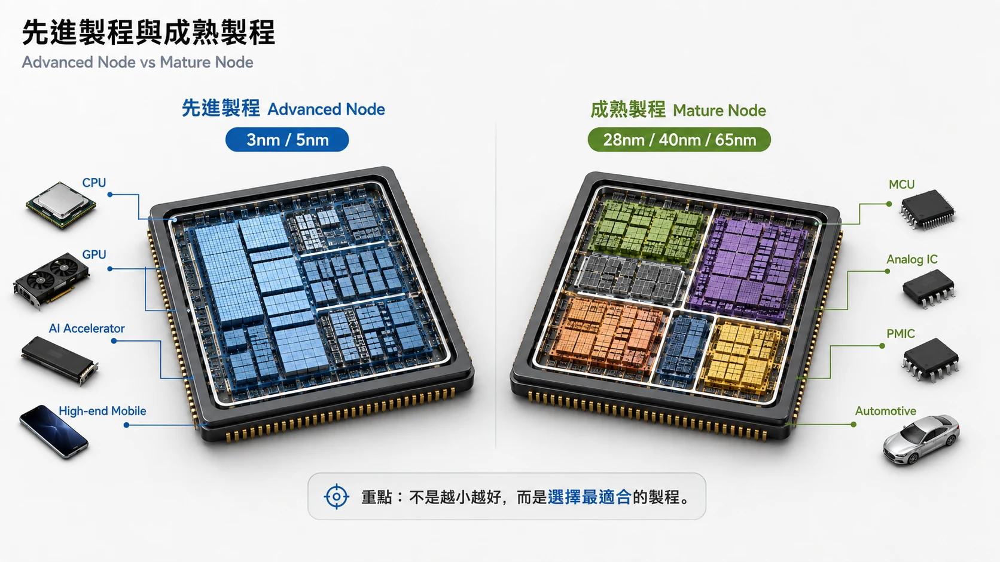
1.6 半導體產業的重要性與基本特徵
從智慧型手機、個人電腦與雲端資料中心，到汽車、工業機器人、醫療設備、通訊系統及能源設施，現代科技產品幾乎都依賴不同種類的半導體。半導體不只是單一產業的產品，同時也是數位化、人工智慧、自動化與智慧製造的重要基礎技術（McKinsey & Company, 2025）。
半導體產業同時具有幾項鮮明特徵。首先，晶圓製造需要昂貴廠房、精密設備及長期研發投入，具有高度資本密集與技術密集特性。其次，晶片製造涉及大量反覆且高度精密的製程，生產能力不只取決於設備，亦取決於製程整合、良率及長期累積的製造經驗。最後，現代半導體產業高度專業分工，晶片設計、晶圓製造、設備、材料及封裝測試往往由不同企業負責，因此形成彼此高度依存的全球產業鏈。ASML將業者概括區分為同時從事設計與製造的IDM、專門提供製造服務的Foundry，以及專注設計的Fabless公司。
理解這些基本技術與產品差異後，下一章將進一步從產業角度分析半導體價值鏈如何分工，以及台積電、NVIDIA、ASML等企業分別位於什麼位置、以何種方式創造價值。
參考文獻
ASML. (2023, October 4). Six crucial steps in semiconductor manufacturing. https://www.asml.com/en/company/stories/2021/semiconductor-manufacturing-process-steps
ASML. (n.d.-a). The basics of microchips. https://www.asml.com/en/technology/all-about-microchips/microchip-basics
ASML. (n.d.-b). How microchips are made. https://www.asml.com/en/technology/all-about-microchips/how-microchips-are-made
Intel. (2025). Intel 4 versus Intel 7 and Intel process technology naming. https://www.intel.com/content/www/us/en/support/articles/000097598/processors.html
McKinsey & Company. (2025, April 14). What is a semiconductor? https://www.mckinsey.com/featured-insights/mckinsey-explainers/what-is-a-semiconductor
第二章 全球半導體產業鏈：產業結構、主要參與者與價值分配
半導體產業的特徵，不僅在於技術高度複雜，更在於其價值創造過程並非由單一企業獨立完成，而是由設計、製造、設備、材料、封裝測試與系統整合等多個環節共同構成。一顆晶片從概念形成到最終進入手機、汽車、伺服器或工業設備，往往需要跨越多個國家、結合不同企業的專業能力，才能完成商品化。第一章已介紹晶片的基本類型與製造流程；本章則進一步從產業層面出發，說明半導體價值鏈的基本結構、主要商業模式、關鍵企業與全球區域分工。
整體而言，現代半導體產業是一條高度專業分工且全球化的價值鏈。SIA將其描述為由設計、製造、封裝、設備、材料與終端市場等多個相互依賴的環節所構成，而PwC亦將AI、先進封裝、記憶體升級與供應鏈重組視為當前產業結構持續變動的重要因素（PwC Taiwan, 2025; Semiconductor Industry Association [SIA], 2025）。
2.1 半導體價值鏈的基本結構
若以產品形成流程觀察，半導體價值鏈大致可分為：EDA與矽智財、IC設計、晶圓製造、封裝與測試，以及系統整合與終端產品；其中，半導體設備與材料則支撐整個製造體系運作。
EDA與IP提供晶片開發所需的設計工具與功能模組；IC設計公司負責定義產品功能與架構；晶圓製造企業將設計轉化為實體晶片；封裝與測試使裸晶成為可以實際使用的電子元件；最終再由系統廠與品牌企業整合至手機、伺服器、汽車與各類電子產品。這種專業分工，使企業能將資源集中於自身擅長的環節，也形成今日半導體產業高度專業化的結構。
半導體產業的價值因此並不只存在於最終晶片本身，而是分布於設計工具、智慧財產、產品架構、製程技術、設備能力、量產服務及終端系統等不同節點。
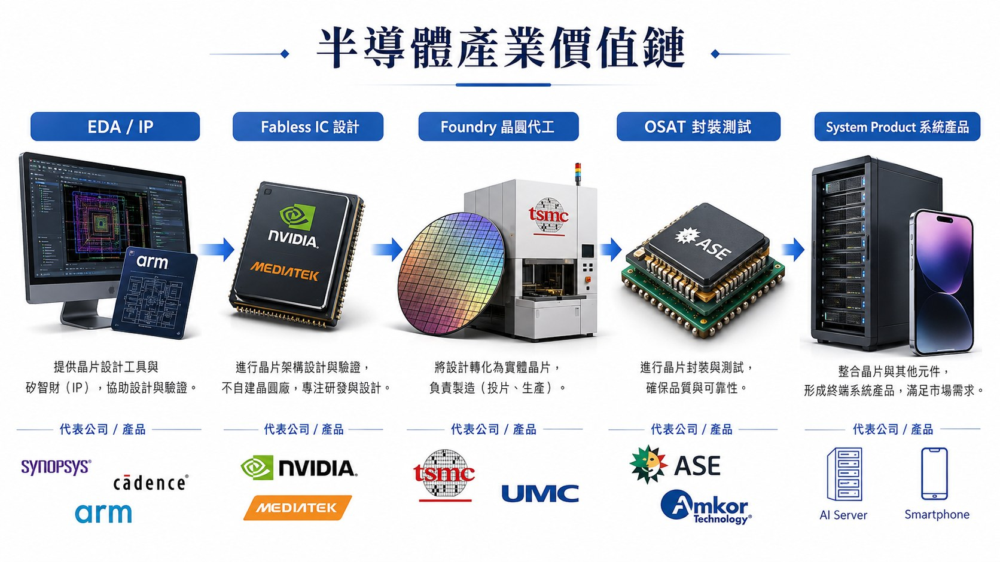
2.2 設計端：EDA、矽智財與IC設計公司
半導體價值鏈的起點在於設計，而非製造。現代晶片整合的電晶體數量已達數十億甚至更高層級，設計與驗證工作亦愈趨複雜。因此，設計端本身已形成一個高度專業化且知識密集的產業領域。
首先是EDA（Electronic Design Automation）。EDA軟體涵蓋電路設計、模擬、驗證、布局與繞線等流程，是現代IC設計不可或缺的基礎工具。主要企業包括Synopsys、Cadence與Siemens EDA。這些公司並不直接製造晶片，而是提供工程師將產品構想轉換為可製造電路所需要的設計環境。
第二個重要環節是矽智財（Semiconductor IP）。IP是可被授權、重複使用並整合至不同晶片中的設計模組，例如CPU核心、記憶體介面與高速傳輸功能。代表性企業Arm即以處理器架構與IP授權為主要商業模式。這表示半導體產業中的技術知識本身也可以商品化，而不一定需要透過實體晶片銷售才能創造價值。
在EDA與IP之上，則是IC設計公司。這些企業負責決定晶片的功能、效能、功耗、架構及應用場景。代表企業包括NVIDIA、AMD、Qualcomm、Broadcom、MediaTek與Marvell等；Apple、Google與Amazon等大型系統公司近年也逐漸建立自有晶片設計能力。
《晶片戰爭》將1980年代後設計與製造逐步分離的產業變化概括為無晶圓廠革命（Fabless Revolution）。在專業晶圓代工模式成熟之後，新創半導體企業不再需要同時籌措巨額資本興建晶圓廠，而可以將資本與人才集中於晶片架構、產品設計與軟體，使NVIDIA、Qualcomm與Broadcom等企業得以在沒有大型自有晶圓廠的情況下快速發展（Miller, 2023, pp. 263–269）。
因此，現代半導體的設計端大致形成EDA工具—IP—IC設計三層結構，各自提供不同形式的知識、技術與產品能力。
2.3 製造端：晶圓製造、設備與材料
晶片設計完成後，必須進入實體製造階段。晶圓製造需要經過沉積、微影、蝕刻、離子植入、清洗、量測與檢測等大量高精度程序，因此是半導體價值鏈中資本與工程密集程度最高的環節之一。
主要晶圓製造企業包括TSMC、Samsung、Intel、UMC與GlobalFoundries等。其中部分企業同時設計與製造自有產品，部分則主要提供外部客戶製造服務。專業晶圓代工模式的形成，使晶圓製造逐漸成為可以獨立提供的產業服務。
1987年台積電成立，是此一產業分工的重要轉折。過去晶圓代工多為IDM企業使用剩餘產能提供的附屬服務；專業晶圓代工則將製造本身轉化為核心業務，提高客戶對產能與品質的可依賴性，也讓IC設計企業不再必須自行興建晶圓廠。張忠謀將此一變化概括為把晶圓代工「從副業變成專業」，並認為它進一步降低了半導體公司的進入門檻（張忠謀，2024, pp. 173–175）。
晶圓製造同時高度依賴半導體設備供應商。例如微影設備由ASML、Nikon與Canon等企業提供；Applied Materials、Lam Research與Tokyo Electron則涵蓋沉積、蝕刻與其他製程設備；KLA主要提供量測與檢測設備。其中ASML在先進微影設備上的產業位置，顯示設備企業即使不直接製造最終晶片，也可能掌握關鍵製程所需的核心技術。
另一項基礎則是半導體材料。矽晶圓、光阻、電子特氣、高純度化學品與其他材料共同支撐晶圓製程，主要供應商包括Shin-Etsu、SUMCO、GlobalWafers與Siltronic等。
因此，晶圓製造並非單一晶圓廠的活動，而是建立在製造企業、設備公司與材料供應商共同協作的基礎之上。
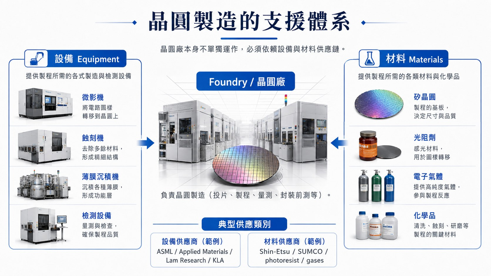
2.4 後段與終端系統：封裝測試、系統廠與品牌企業
晶圓製造完成後，仍須經過測試、切割、封裝與最終測試，才能成為可安裝於電子產品中的晶片。專門提供這些後段服務的企業通常稱為OSAT（Outsourced Semiconductor Assembly and Test），代表企業包括ASE（日月光）、Amkor與PTI（力成科技）。
傳統封裝主要負責保護裸晶、建立電氣連接與散熱。然而，隨著AI與高效能運算快速發展，HBM、Chiplet與2.5D／3D IC等技術使封裝逐漸成為影響系統效能與資料傳輸效率的重要環節。PwC亦將HBM、Chiplet與先進封裝列為半導體產業的重要發展趨勢（PwC Taiwan, 2025）。這也使部分晶圓製造企業開始向先進封裝延伸，例如台積電的CoWoS與SoIC等服務。
價值鏈的另一端則是系統整合與終端產品企業。Apple、Microsoft、Google、Amazon及各類汽車與電子產品企業，雖然不一定被歸類為傳統半導體公司，但其產品規格與採購需求會影響晶片設計與製造方向。部分大型系統公司甚至直接參與晶片設計，例如Apple的A系列與M系列晶片，以及雲端企業開發的資料中心與AI專用晶片。
《蘋果在中國》呈現出終端系統企業深度參與供應鏈的案例。Apple雖大量使用外部製造商，仍透過設備投資、工程團隊與品質管理參與供應商的生產流程，顯示系統企業即使沒有直接擁有全部製造資產，仍可能深度參與產品與供應鏈管理（McGee, 2025, pp. 9–14）。
2.5 主要商業模式：企業如何選擇價值鏈位置
不同企業會根據自身技術能力、資本條件與市場策略，選擇參與不同價值鏈環節，由此形成幾種典型營運模式：IDM、Fabless、Foundry與OSAT。
IDM（Integrated Device Manufacturer）同時掌握晶片設計與晶圓製造，通常也具備部分封裝測試能力。代表企業包括Intel、Samsung、Micron、Texas Instruments、SK hynix與Infineon。其優勢是設計與製造可高度協同，但同時必須承擔龐大的設備投資與產能風險。
Fabless企業專注晶片設計，將製造委託外部晶圓廠。代表企業包括NVIDIA、AMD、Qualcomm、Broadcom與MediaTek。這種模式可降低固定資本負擔，使企業把資源集中於架構、產品、軟體與市場。
Foundry主要替外部客戶製造晶片，代表企業包括TSMC、UMC與GlobalFoundries。其核心競爭力在於製程能力、良率、產能、交期與客戶服務，而非推出自有終端晶片產品。
OSAT（Outsourced Semiconductor Assembly and Test）則專門承接封裝與測試等後段工作，代表企業包括ASE、Amkor與PTI。隨著先進封裝重要性上升，OSAT與Foundry之間的業務邊界也開始部分重疊。
這四種模式並非絕對互斥。例如Samsung同時具有IDM與Foundry業務；台積電雖以Foundry為核心，也持續擴大先進封裝能力。因此，更重要的不是替企業貼上固定標籤，而是理解：企業選擇哪些能力保留在內部、哪些活動交由外部專業公司完成，以及它希望在哪個價值鏈環節建立競爭優勢。
2.6 全球主要企業與區域分工
全球半導體產業已形成明顯的區域分工。美國主要強於IC設計、EDA、IP與設備，代表企業包括NVIDIA、AMD、Synopsys、Applied Materials等；台灣主要集中於Foundry、IC設計與封裝測試，代表企業包括TSMC、MediaTek與ASE；韓國則以記憶體、IDM與製造見長，Samsung與SK hynix最具代表性。
日本的優勢主要集中於材料、設備與感測器，Tokyo Electron、Shin-Etsu與Sony等位於重要供應鏈節點；歐洲則在微影設備、車用與功率半導體具有突出地位，代表企業包括ASML、Infineon與NXP。中國則持續擴張電子製造、成熟製程與供應鏈自主化能力，SMIC是主要代表之一。
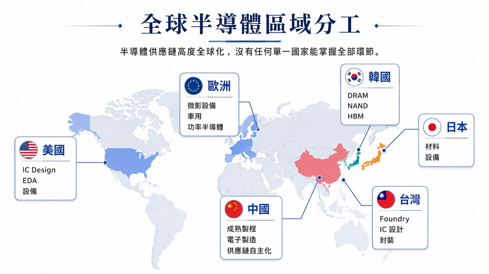
圖2-2呈現各主要區域在全球半導體產業中的相對強項。這種分工顯示，半導體產業並不是單純比較「哪一個國家的產業最強」，而是不同地區在設計、設備、材料、製造與封裝等不同環節形成各自的專業位置，再共同構成完整的全球產業鏈。
綜合本章可知，現代半導體產業已形成高度專業化的價值鏈，不同企業依其技術能力、資本條件與策略定位，分別參與設計、製造、設備、材料與封裝測試等環節。IDM、Fabless、Foundry與OSAT等不同商業模式，也意味著企業所需要管理的核心資源與活動並不相同。下一章將由產業結構進一步進入企業層次，分析台灣半導體企業如何透過決策、組織協調、人才管理與客戶導向，將其專業能力轉化為企業競爭力。
參考文獻
Hijink, M.（2025）。《造光者：晶片戰爭中最神秘的關鍵企業，微影巨人ASML制霸未來科技賽局的崛起之路》（洪慧芳譯）。天下雜誌。
McGee, P.（2025）。《蘋果在中國：美國科技巨頭如何造就中國製造霸權》（鍾玉玨譯）。商業周刊。
Miller, C.（2023）。《晶片戰爭：矽時代的新賽局，解析地緣政治下全球最關鍵科技的創新、商業模式與台灣的未來》（洪慧芳譯）。天下雜誌。
張忠謀（2024）。《張忠謀自傳：下冊，一九六四——二〇一八》。天下文化。
PwC Taiwan.（2025）。《半導體產業趨勢報告：塑造半導體產業格局的趨勢與因素》。資誠聯合會計師事務所。https://www.pwc.tw/zh/publications/topic-report/assets/state-of-the-semicon-industry.pdf
Semiconductor Industry Association.（2025）。2025 SIA factbook. https://www.semiconductors.org/wp-content/uploads/2025/05/2025-SIA-Factbook-FINAL-1.pdf
Taiwan Semiconductor Manufacturing Company. (n.d.). Everything to know about dedicated foundries. https://www.tsmc.com/english/aboutTSMC/dc_infographics_foundry
第三章 台灣半導體企業的管理實務與組織競爭力
第二章說明全球半導體產業的分工與商業模式，本章將分析層次移至企業內部，探討台灣半導體企業如何管理技術、人才、組織與客戶，以及這些管理方式如何形成組織競爭力。
台灣半導體企業分布於IC設計、晶圓製造與封裝測試等領域，策略與文化並不完全相同，但大型企業仍反覆呈現幾項特徵：長期工程投資、專業分工、快速跨部門協作、績效導向、內部人才培育，以及強烈的客戶回應與執行能力。
這些能力最終會落在良率、交期、設備利用率、問題處理速度與量產時程等具體結果，使企業能在高強度環境下穩定執行。
若將這些管理能力轉換成製造現場可觀察的結果，常見指標包括良率（yield）、設備可用率（equipment uptime）、產能（capacity）、生產週期（cycle time）、準時交付（on-time delivery）與品質（quality）。這些指標彼此連動，也讓「管理能力」能具體反映在量產與客戶交付結果上。
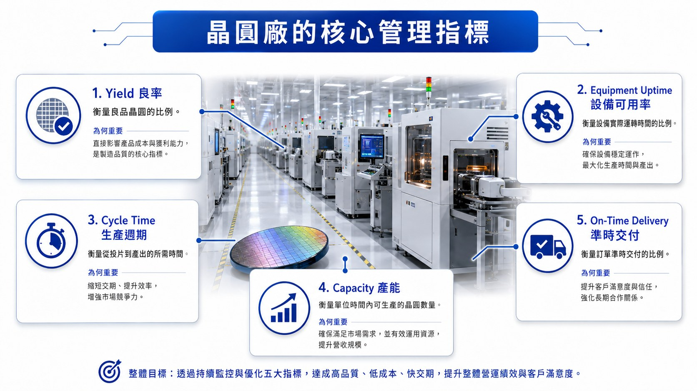
3.1 長期工程投資與快速資源配置
半導體企業的重大決策通常具有長期性。製程開發、晶圓廠建設、設備投資與新產品研發，都需要在市場結果完全明朗之前投入大量資源。因此，管理階層必須同時考慮技術路線、市場需求、資本支出與未來產能。
台積電長期維持高額研發與資本投入，是最具代表性的案例。2009年張忠謀重新擔任CEO後，確立提高研發投入並大幅增加資本支出的方向，反映公司選擇在景氣波動期間持續累積技術能力（張忠謀，2024，p. 256）。 張忠謀也曾比較工研院與台積電的研發條件，認為台積電較充裕的研發經費、競爭壓力及分紅與股票等誘因，使研發團隊具有不同的資源與動機（張忠謀，2024，p. 625）。
這種長期投入也存在於IC設計企業。聯發科長期將相當高比例的營收投入研發，並隨5G、AI與高效能運算等技術發展重新配置研發人才；聯詠亦持續維持雙位數比例的研發投入（MediaTek, 2025; Novatek, 2026）。對Fabless企業而言，資本壓力雖不像晶圓廠集中於設備與廠房，但技術競爭同樣要求企業長期投入晶片架構、演算法、IP與產品平台。
因此，台灣企業常同時維持長期技術投入與快速資源調整：核心技術持續投資，市場或客戶需求改變時則迅速移動研發與產能。
在半導體產業中，短期財務壓力與長期投資經常發生衝突。張忠謀回顧德州儀器時曾批評過度追逐短期績效、削減研發及壓低費用的管理方式，認為這會傷害企業的長期發展（張忠謀，2024，p. 381）。 台灣主要半導體公司的長期競爭力，很大程度來自願意持續把當期獲利再投入下一代技術、設備與人才（MediaTek, 2025; TSMC, 2025）。
3.2 專業分工、跨部門協調與快速解決問題
半導體企業具有高度專業分工。製程整合、設備、良率、研發、品質、產品工程、業務與供應鏈等部門，各自掌握不同知識。一個產品或製造問題通常同時牽涉多個功能，因此組織需要快速交換資訊並協調資源。
張忠謀早期即強調「研發、業務生命共同體」。他曾以過去任職企業的經驗說明，研發部門若與業務及製造需求長期脫節，即使擁有優秀人才，也可能無法產生有效商業成果（張忠謀，2024，pp. 113–114）。 他對科技企業經營的整理亦包含扁平組織、開放溝通、唯才是用與重視研發等要素（張忠謀，2024，p. 150）。
台灣大型半導體公司的跨部門協作可從晶圓廠設備異常理解。若關鍵設備故障，設備部門先排除故障，製程部門評估參數與良率影響，生產部門重排批次與產能，品質部門確認產品風險，供應鏈與業務則同步調整交期與客戶溝通。一次局部故障因此可能形成「設備故障 → 生產中斷 → 產能下降 → 排程延誤 → 客戶交期受影響」的連鎖反應。能否快速找齊不同專業、共享資訊並做出決策，便成為量產管理的重要能力（TSMC, 2025）。
同樣的協作邏輯也存在於IC設計與封裝測試：聯發科需在研發、產品規劃、業務與客戶團隊間協調產品時程，日月光的智慧製造則結合製程、自動化、IT、設備與品質。半導體企業所追求的「速度」，最終會反映在故障恢復、良率改善、新產品導入與交付可靠度上（ASE Technology Holding, 2025; MediaTek, 2025; TSMC, 2025）。
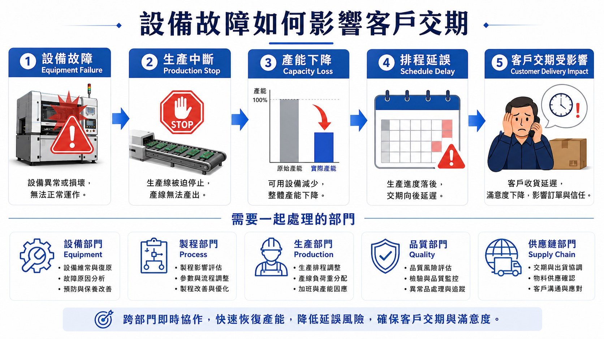
3.3 高工時、高要求與績效導向的執行文化
台灣半導體企業最具辨識度、同時也最具爭議性的特徵之一，是高強度的工作與執行文化。
晶圓廠設備價格昂貴，生產線24小時運轉，設備停機會直接形成產能損失。因此，工程師與設備人員的待命速度本身具有經濟價值。張忠謀在2023年的公開對談中以非常直接的例子描述台灣與美國的差異：若設備凌晨1點故障，美國晶圓廠可能到早上才完成修復，而台灣可能在凌晨2點就處理完成；他將這種差異稱為「工作文化的競爭優勢」，並特別強調台灣維修與技術人員的專業、勤奮與技能（CommonWealth Magazine, 2023）。
這種高強度工程文化確實可能提高設備可用率與異常恢復速度，也使晶圓廠在連續生產環境中維持較高執行效率（CommonWealth Magazine, 2023）。
績效制度進一步強化這種工作方式。台積電成立初期即建立紅利制度，張忠謀也將經常性績效考核、獎勵優秀員工與分享企業成果視為重要管理元素（張忠謀，2024，p. 150）。企業對員工提出高績效與快速執行要求，同時以薪資、獎金、分紅、股票與職涯發展回饋績效（張忠謀，2024；TSMC, 2025）。
高壓工作文化也伴隨輪班、長工時、待命與人才留任等成本。其生產效率與人才負荷可以同時存在；當人口結構與工作價值觀改變後，企業必須重新處理這種模式的持續性（TSMC, 2025）。
因此，高工時與高要求既是台灣半導體執行能力的一部分，也具有明確的人才成本。
3.4 工程人才的大量培育與知識制度化
半導體許多能力高度依賴實作經驗，設備調校、製程整合、良率改善與產品除錯都需要長期訓練。因此，大量吸收、培育並專業化工程人才，是台灣企業的重要管理能力。
晶圓製造、IC設計與封裝測試都需要大量工程師協作，企業也必須把個人經驗轉化為流程、文件、訓練教材與標準作業，降低知識隨人員流失的風險（TSMC, 2025; UMC, 2025）。
聯電成立設備人才訓練體系，將不同晶圓廠原本分散的新進工程師訓練進一步標準化（UMC, 2025）；台積電亦透過大量內部課程、在職訓練、師徒學習與跨廠經驗傳承培養工程人才（TSMC, 2025）。聯發科的人才管理則更偏向設計與研發專業，透過技術職涯、產品團隊與人才重新配置，將工程能力移往新的技術平台（MediaTek, 2025）。
台灣大學提供大量理工人才，但先進製程與量產能力仍主要在企業內透過訓練與實作形成。企業因此扮演「人才轉化器」：把一般理工背景逐步培養成製程、設備、IC設計或封裝專業人才（TSMC, 2025; UMC, 2025）。張忠謀也強調，人才數量之外，領導者能否有效運用人才同樣關鍵（張忠謀，2024，p. 92）。
因此，台灣半導體的人才優勢同時來自工程人才供給，以及企業把人才轉化為可複製研發與量產能力的制度。
3.5 客戶導向與快速回應：從台灣管理模式走向全球
台灣半導體企業長期處於全球B2B供應位置，客戶上市時程與品質要求會直接傳導至研發、製造與品質部門，因此形成強烈的客戶導向。
台積電將「客戶信任」列為核心競爭優勢，專業晶圓代工也強調不與客戶直接競爭；聯發科則必須持續追蹤終端客戶需求並調整產品（張忠謀，2024；MediaTek, 2025; TSMC, 2025）。
台灣電子製造產業長期也展現相似文化。《蘋果在中國》描述Apple於1990年代開始在台灣尋找製造合作夥伴時，台灣企業相較日本廠商展現較高彈性與回應速度，也願意投資新設備、接受客戶工程師訓練並調整生產方式(McGee, 2025, p. 34)。 這種「願意配合客戶把問題做出來」的工程文化，後來成為台灣電子與半導體供應鏈的重要特徵。
客戶需求會迅速轉化為內部工程任務，使回應速度、問題解決速度與承諾可靠度成為重要競爭工具（MediaTek, 2025; TSMC, 2025）。
全球化也考驗這套模式。美國、日本與歐洲的勞動制度與工作文化不同，《蘋果在中國》亦提到台積電美國擴張面臨人才短缺與文化磨合（McGee, 2025, p. 340）。台灣24小時快速支援的工程文化因此未必能原樣移植海外（CommonWealth Magazine, 2023）。
全球管理的關鍵，是保留速度、品質與工程紀律，同時適應不同地區的工時制度、溝通方式與人才期待。
綜合而言，台灣半導體企業擅長以長期投入、專業分工、績效制度、人才培育與快速協作，把複雜技術轉化為穩定量產與客戶交付能力（MediaTek, 2025; TSMC, 2025; UMC, 2025）。
這套組織能力受到工程人才、工作文化、製造經驗與客戶導向共同塑造。下一章將把視角移至企業之外，說明群聚、供應商與知識流動如何形成產業層級優勢。
參考文獻
ASE Technology Holding Co., Ltd. (2025). ASE Technology Holdings recognized as a top 10 sustainable company in Taiwan for third consecutive year, earning 16 awards, showcasing leadership across environmental, social, and governance (ESG) practices. https://www.aseglobal.com/press-room/2025-tcsa-taiwan-top-10-sustainable-companies-award
Frost, E., & Liu, K. (2023, March 19). TSMC founder: “In the chip sector, globalization is dead.” CommonWealth Magazine. https://english.cw.com.tw/article/article.action?id=3396
MediaTek Inc. (2025). Innovation. https://corp.mediatek.com/about/sustainability/innovation
Novatek Microelectronics Corp. (2026). 2025 sustainability performance overview. Novatek Microelectronics. https://esg.novatek.com.tw/en/overview/performance
Taiwan Semiconductor Manufacturing Company. (2025). 2024 annual report. https://investor.tsmc.com/static/annualReports/2024/english/index.html
United Microelectronics Corporation. (2025). Semiconductor Equipment Academy: UMC's internal talent training center. UMC. https://www.umc.com/en/Html/latest_newsletters/HasLeftContent/2025Q3-1
張忠謀（2024）。《張忠謀自傳：下冊，一九六四——二〇一八》。天下文化。
McGee, P.（2025）。《蘋果在中國：美國科技巨頭如何造就中國製造霸權》（鍾玉玨譯）。商業周刊。
第四章 台灣半導體產業生態系：群聚形成、產業協作與競爭優勢
第三章從企業內部分析台灣半導體公司的管理與組織能力，本章將分析層次提升至產業生態系。台灣半導體的國際競爭力建立在多家企業、研究機構、大學、科學園區與專業供應商長期共同發展的基礎上。晶圓製造、IC設計、封裝測試、材料、設備與工程服務等能力集中於相對有限的地理範圍，使企業能夠取得技術、人才與生產支援，並形成持續強化的產業網絡。
台灣模式的特色也與產業形成歷史密切相關。1970年代政府主導技術引進，工研院負責吸收與建立技術能力；1980年代後逐步透過技術移轉與公司衍生將能力帶入民間，同期新竹科學園區開始形成企業群聚。此後IC設計、晶圓製造、封裝測試與供應商持續專業化，逐步形成今日高度密集的產業生態系。理解這段演進，有助於回答一個核心問題：為什麼台灣能在全球半導體專業分工中長期維持重要地位？
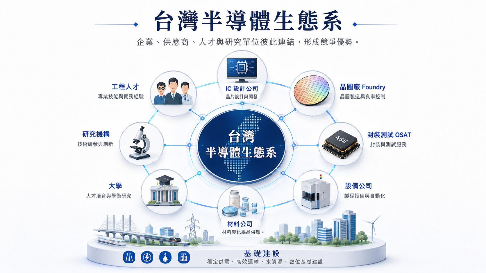
4.1 從技術引進到產業化：台灣半導體產業的形成
台灣現代半導體產業的發展通常追溯至1970年代。1974年政府官員與科技專家開始規劃積體電路產業發展，1976年工研院與美國RCA簽訂技術移轉與授權合約，第一批赴美受訓人員分別學習IC設計、製程、測試與設備技術。1977年台灣第一座積體電路示範工廠完成，開始建立本地製造能力；其運作半年後良率已達70%，高於技術移轉來源RCA工廠當時約50%的水準（工業技術研究院，2023a）。
早期政策具有明確的產業化方向。RCA計畫建立技術與人才後，工研院於1980年衍生成立聯華電子，將四吋晶圓技術及研發團隊移轉至民間企業；1984年前後又推動VLSI計畫，自行建立六吋晶圓及大型積體電路研發能力。1987年台積電成立，VLSI實驗工廠的廠房、設備、技術與98名人員一併移轉，進一步把工研院累積的製造能力轉變為專業晶圓代工企業（工業技術研究院，2023b）。
這段歷史可簡化為一條產業能力累積鏈：Technology Transfer → Learning → Talent → Company Formation → Industry Expansion。海外技術引進只是起點，真正形成產業的是工研院將技術轉化為本地學習與工程經驗，再透過人才移轉與衍生公司把能力帶入市場。後續次微米計畫亦培育超過300名工程人才，並於1994年衍生成立世界先進（工業技術研究院，2023c）。
台積電的形成也反映這套制度的銜接。張忠謀回顧公司成立初期時指出，台積電的核心團隊來自工研院VLSI實驗工廠，當時最具優勢的能力是成熟製程與高良率，因此選擇集中於製造服務（張忠謀，2024，p. 509）。 專業晶圓代工成熟後，又降低IC設計公司的資本門檻，促使設計與製造形成更細緻的專業分工（張忠謀，2024，pp. 173–175）。
因此，台灣半導體產業的形成具有明顯的累積性：設備與技術可以引進，但人才、量產經驗與組織能力必須在實作中逐步建立。這也說明為何後來的企業群聚並非單靠資本投資形成，而是建立在前一階段技術學習與人才擴散的基礎上。
4.2 工研院、科學園區與產業政策：建立企業成長的制度環境
工研院處理技術與人才問題，科學園區則提供企業成長所需的空間與基礎設施。1980年成立的新竹科學園區，把科技企業、研究機構及大學集中於新竹地區；聯電即為最早進駐的半導體企業之一（工業技術研究院，2023b）。
科學園區提供的條件包括土地、水、電、交通、行政與廠房建設所需的制度支持。張忠謀曾特別提及新竹科學園區的基礎設施、工作與居住環境，以及單一窗口服務，並將其視為台灣科技業發展的重要條件（張忠謀，2024，p. 153）。 其區位又鄰近工研院、清華大學與交通大學，使研究、人才培育與企業活動在較小的地理範圍內連結。
隨著產業擴張，群聚範圍逐漸由竹科延伸至中科與南科。2025年三大科學園區營業額合計達5.8兆元，其中竹科約1.7兆元、中科1.13兆元、南科2.97兆元；積體電路產業營業額較前一年成長26.8%（國家科學及技術委員會，2026a）。 截至2026年6月，三大園區共有234家積體電路企業，其中竹科190家，顯示新竹仍維持高度集中的半導體產業密度，同時台灣已形成北、中、南相連的半導體製造與研發網絡（國家科學及技術委員會，2026b）。
產業政策在不同階段也扮演不同角色。早期重點集中於技術引進、人才培育與成立示範工廠；產業成熟後，政策逐漸轉向研發、產學合作、科學園區擴張、基礎設施與新興技術支持。這種演變使政府角色從早期「建立產業能力」逐步轉向「維持創新與投資環境」，企業則承擔市場競爭與技術投資的主要責任。
4.3 專業分工形成生態系：從大型企業到供應商網絡
第二章已介紹IC設計、晶圓製造與封裝測試在全球價值鏈中的功能；台灣的特殊之處在於這些活動大量集中於同一產業環境。以新竹為核心，可以同時找到IC設計公司、晶圓製造企業、設備與材料商、光罩、測試、廠務工程及各種技術服務企業；中部與南部又提供大型晶圓製造、封裝及設備供應能力。
因此，台灣半導體生態系具有明顯的核心企業帶動專業供應商成長特徵。大型晶圓廠擴充產能後，需要更多氣體、化學材料、零組件、設備維護與廠務服務；供應商為了取得訂單，又必須符合更嚴格的品質、交期與技術規格。當客戶製程持續升級時，供應商也被迫同步提升能力。
台積電的供應鏈在地化提供具體例子。公司自2004年前後持續鼓勵供應商赴台設立生產能力，理由包括縮短新品開發時間、增加供應彈性與降低不必要成本，並透過技術輔導提高本地供應商的品質與能力（TSMC, 2018）。 近年的合作已進一步深入共同研發。2023年的微影材料計畫中，台積電從技術開發、品質分析、樣品驗證到產線規劃協助供應商建立本地生產線，產品驗證與建線時間縮短50%，並形成超過新台幣15億元的年產值（TSMC, 2023）2024年啟動的零組件在地化與創新計畫，也透過資金與技術輔導協助本土企業改善製造能力；截至2026年初，12家合作供應商已完成22項改善方案，零組件驗證及開發時間縮短約50%（TSMC, 2026）。
這些案例呈現供應商與晶圓廠的共同升級（co-evolution）：客戶提高製程、品質與交期要求，供應商因而改善材料、設備與服務；供應商能力提升後，又反過來縮短晶圓廠的開發、驗證與維修時間。可簡化為「Customer Requirement ↑ → Supplier Capability ↑ → Manufacturing Performance ↑」的循環，因此競爭力分布在整個製造網絡，而非單一企業。
4.4 群聚效應：人才流動、知識外溢與製造效率
群聚的價值也來自隱性知識（tacit knowledge）。許多製程調整、設備維護、良率改善與材料應用經驗很難完整寫進SOP，往往要透過實際操作與共同解題才能掌握。當企業、研究機構與供應商集中在同一區域，工程師交流與合作的頻率提高，這些經驗更容易在產業內流動。
針對新竹科學園區的實證研究提供了明確證據。Tsai（2005）以1986至1995年間2,340家台灣高科技工廠資料進行分析，發現產業內與空間上的知識外溢，是高科技產業集中於新竹的重要因素之一（Tsai, 2005）。 Chyi、Lai與Liu（2012）的研究則發現，新竹高科技群聚中的外部研發知識外溢對企業銷售表現具有顯著影響，企業因此可能從周邊其他公司的研發活動中取得間接效益（Chyi et al., 2012）。
人才流動是知識外溢的重要媒介。RCA受訓人員回到工研院，之後又有團隊進入聯電、台積電及其他企業；產業成熟後，工程師在設計公司、晶圓廠、設備商與供應商之間移動，也會攜帶工程經驗、品質觀念與問題解決方法。這種超越單一公司的經驗擴散，即是Knowledge Spillover（知識外溢）。
群聚也直接影響製造效率。設備異常時可以較快取得維修與零組件支援；新材料導入時可以更密集地進行測試與驗證；客戶擴產時，供應商也能快速建立鄰近產能。例如台積電推動電鍍添加劑在台生產後，生產週期由60天降至20天，與供應商本地工廠直接合作也提高資訊處理效率（TSMC, 2026）。
這類效率通常很難在單一公司的財務報表中完整呈現，但會反映在開發週期、維修速度、交付時間與製程學習速度上。企業密度愈高，相關服務市場也愈容易形成；供應商服務更多客戶後，又能累積更完整的產業經驗，形成典型的群聚正向循環。
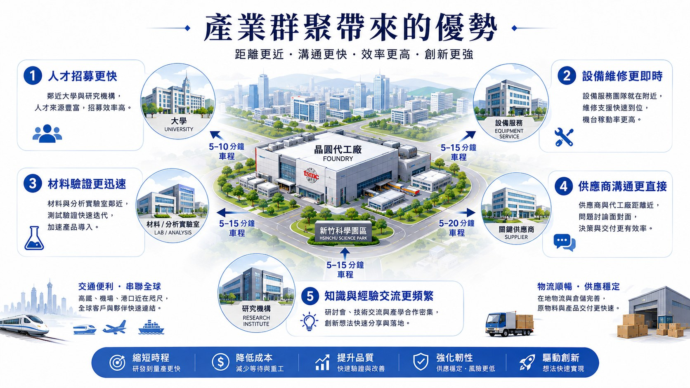
4.5 台灣半導體競爭優勢：難以拆解的系統能力
綜合前述發展，台灣半導體的競爭優勢可以理解為多項能力長期疊加所形成的系統能力。
第一是歷史累積形成的技術與製造基礎。從RCA技轉、工研院示範工廠到聯電與台積電，技術、人員與組織經驗具有明顯延續性。第二是高度專業分工，使設計、製造、封裝及供應商能各自深化專業。第三是地理群聚與高密度人才市場，降低人才、知識與技術服務的取得成本。第四是供應商共同升級機制，使大型企業的製程要求向上游擴散，進而提升整體產業能力。第五則是完整製造網絡所形成的速度與彈性，使新產品開發、設備維修、材料驗證與產能擴張能在相對短時間內取得支援。
這些因素具有強烈的互補性。晶圓廠吸引供應商，供應商增加又提高晶圓廠效率；企業增加吸引更多工程人才，人才密度提高又促進新公司的形成與技術流動；大型客戶持續提出更高技術要求，又迫使整個供應鏈升級。產業一旦達到足夠規模，便會產生自我強化（self-reinforcing）效果。
因此，複製台灣半導體能力所需要的條件遠超過單純興建晶圓廠。設備與廠房可以透過資本投資取得，成熟的工程人才市場、供應商能力、研究網絡、量產經驗及長期合作關係需要時間累積。2025年台灣三大科學園區營業額達5.8兆元，以及積體電路產業持續成長，也反映這套生態系至今仍具有高度產業集聚與擴張能力（國家科學及技術委員會，2026a）。
參考文獻
工業技術研究院。（2023a）。〈向RCA取經發展臺灣積體電路〉。《工研院50周年：深耕產業，創新未來》。https://50th.itri.org.tw/history/semiconductors/1/
工業技術研究院。（2023b）。〈從0到1發展半導體衍生護國神山群〉。《工研院50周年：深耕產業，創新未來》。https://50th.itri.org.tw/history/semiconductors/2/
工業技術研究院。（2023c）。〈記憶體國產自製利基型市場占有一席之地〉。《工研院50周年：深耕產業，創新未來》。https://50th.itri.org.tw/history/semiconductors/3/
張忠謀（2024）。《張忠謀自傳：下冊，一九六四——二〇一八》。天下文化。
國家科學及技術委員會。（2026a）。〈科學園區2025年營收5.8兆元，成長21.83%〉。https://www.nstc.gov.tw/folksonomy/detail/d512df1e-3ced-445c-930c-021a734e88bc?l=ch
國家科學及技術委員會。（2026b）。《科學園區統計資料庫：產業家數統計》。https://wsts.nstc.gov.tw/STSWeb/sciencepark/ScienceParkReport.aspx?language=C&quyid=tqindustry07
Taiwan Semiconductor Manufacturing Company. (2018). Continue driving local supply chain upgrade. https://esg.tsmc.com/en-US/articles/227
Taiwan Semiconductor Manufacturing Company. (2023). TSMC deepens its domestic supply chain research and development capabilities with an annual output value of over NT$1.5 billion. https://esg.tsmc.com/en-US/articles/74
Taiwan Semiconductor Manufacturing Company. (2026). TSMC's parts localization program drives over NT$2 billion in annual output value. https://esg.tsmc.com/en-US/articles/392
Chyi, Y.-L., Lai, Y.-M., & Liu, W.-H. (2012). Knowledge spillovers and firm performance in the high-technology industrial cluster. Research Policy, 41(3), 556–564. https://doi.org/10.1016/j.respol.2011.12.010
Tsai, D. H. A. (2005). Knowledge spillovers and high-technology clustering: Evidence from Taiwan's Hsinchu Science-Based Industrial Park. Contemporary Economic Policy, 23(1), 116–128. https://doi.org/10.1093/cep/byi010
第五章 全球供應鏈、地緣政治與風險管理
半導體產業是全球化程度最高、同時也是地理集中程度極高的產業之一。IC設計、EDA、製造設備、材料、晶圓製造與封裝測試由不同國家與企業分工，使各參與者得以集中資本與人才發展自身優勢。然而，當人工智慧、先進運算、通訊與軍事系統愈來愈依賴高階晶片，這套跨國供應鏈也逐漸具有國家安全與地緣政治意義。
近年的核心變化，是主要國家開始重新評估「依賴他國」所帶來的風險。美國運用其在晶片設計、EDA與製造設備上的優勢限制中國取得先進半導體能力，中國則加速推動自主化；美國、歐洲、日本與韓國也透過補貼、研發投資與產業政策強化本土半導體能力。半導體因此逐漸從全球產業競爭的一部分，轉變為國家科技、經濟與安全戰略的核心。
5.1 高度集中與跨國依賴：半導體供應鏈的結構性脆弱
全球半導體供應鏈建立在高度專業分工之上。美國在IC設計、EDA與部分製造設備具有優勢；台灣集中大量先進晶圓製造能力；韓國在記憶體領域具有關鍵地位；日本掌握多項材料與製造設備；荷蘭ASML則在先進微影設備具有高度不可替代性。
這種結構大幅提高全球產業效率，也形成許多供應鏈瓶頸（chokepoints）。SIA與Boston Consulting Group的研究指出，半導體價值鏈中存在數十個由單一地區掌握高度市占率的關鍵環節。一旦特定環節受到天然災害、戰爭、出口管制或政治衝突影響，其他國家的企業往往難以在短時間內找到替代來源（Semiconductor Industry Association & Boston Consulting Group, 2021）。
半導體供應鏈的另一項特性，是許多關鍵技術具有極高進入障礙。晶圓廠可以透過巨額資本興建，但仍需要取得微影、蝕刻、沉積與量測設備、EDA軟體、高純度材料及長期累積的製程知識。這使不同國家之間形成高度互賴，也產生不對稱關係：掌握少數難以替代技術的國家，可以在國際科技競爭中取得更大的政策槓桿（Miller, 2023）。
因此，全球半導體供應鏈的脆弱性來自兩項條件同時存在：各國彼此高度依賴，部分關鍵能力又高度集中於少數國家與企業。 這項結構也是近年半導體地緣政治升溫的基礎。
5.2 美中科技競爭：從市場競爭走向技術限制
美中半導體競爭最明顯的變化，是政策焦點逐漸由關稅與一般貿易摩擦，轉向限制中國取得先進半導體技術與製造能力。
福建晉華與華為事件呈現了這種政策邏輯。美國可以透過限制關鍵設備、軟體及技術供應，影響中國企業建立先進晶片製造能力；Foreign Direct Product Rule等規則又將部分管制延伸至使用美國技術或設備製造的海外產品，使出口管制具有跨國供應鏈效力（Miller, 2023, pp. 363–368）。
2022年10月，美國商務部工業與安全局（BIS）公布更全面的半導體出口管制，包括限制特定先進運算晶片、超級電腦相關產品與半導體製造設備出口中國，並擴大部分外國製造產品受到美國出口管理規則約束的範圍。2023至2024年間規則又持續修訂；2024年底新增24類半導體製造設備、3類軟體工具及HBM等管制，並增加中國半導體企業與投資機構的Entity List限制（Bureau of Industry and Security [BIS], 2022, 2024）。
出口管制的影響因此不能只理解成「某項產品不能賣」。更重要的是，它可以限制設備、EDA軟體、先進記憶體、製程支援與晶圓代工服務，使受限制企業難以取得、維持或進一步發展先進製造能力。半導體出口管制的戰略性，正來自對技術能力形成與升級路徑的影響。
中國則持續透過國家基金、稅務優惠、研發支持及本土採購，加速晶片設計、製造設備、材料與晶圓製造自主化。外部技術限制也進一步凸顯中國在關鍵半導體技術上的依賴風險，使「科技自主」與「供應鏈安全」成為產業政策的重要目標（Miller, 2023, pp. 377-383）。
美中之間因此形成持續互動的競爭關係：美國藉由關鍵技術限制中國發展速度，中國提高自主研發與本土供應鏈投資，而中國技術能力的提升又可能促使美國重新調整管制範圍。半導體遂成為美中科技競爭中最具代表性的戰略領域之一。
5.3 美中競爭下的東亞：台灣、日本與韓國的不同處境
美中半導體競爭對東亞的影響尤其深刻。台灣、日本與韓國都掌握全球半導體供應鏈的重要環節，同時與美國具有深厚科技或安全關係，也與中國存在大量市場、生產與供應鏈連結。因此，三者面臨的問題都涉及經濟利益與安全政策的交錯。
台灣的特殊性在於先進晶圓製造能力與台海安全問題高度重疊。全球對台灣先進製造能力的依賴，使台海安全情勢具有超越區域政治的產業影響；若晶圓生產、能源、物流或人員流動受到重大干擾，可能迅速傳導至AI、消費電子、汽車、資料中心與國防產業（Miller, 2023, pp. 393-401）。台灣半導體的重要性因此同時具有經濟與戰略性質。
日本的戰略位置主要來自材料與設備。日本雖已失去1980年代在DRAM等最終晶片市場的主導地位，仍掌握多項半導體化學材料、矽晶圓、光阻及製造設備。這些上游能力使日本在全球供應鏈中仍具有高度影響力（太田泰彥，2022）。美國加強對中科技限制後，日本也於2023年將23類半導體製造設備納入更嚴格的出口管理，使設備供應開始更直接地與經濟安全政策連結。
韓國的情況則集中於記憶體產業。Samsung Electronics與SK hynix在DRAM、NAND及近年的HBM市場具有重要位置，同時長期在中國設有大型生產基地。中國既是市場也是製造據點，而美國又是韓國主要安全盟友與重要科技合作夥伴，使韓國在出口管制下必須同時處理設備取得、中國廠營運及美韓合作等問題。
因此，美中競爭對東亞形成一個較複雜的格局：安全與關鍵技術合作逐漸向美國靠攏，商業市場與既有供應鏈仍與中國高度連結。 台灣、日本與韓國所掌握的技術不同，政策選擇也不同，但都必須面對半導體產業與外交、安全政策日益交織的環境。
5.4 產業政策全球化：CHIPS Act與半導體「國家戰略化」
2020至2021年的全球晶片短缺進一步改變各國政府對半導體的認知。汽車、資訊電子與工業生產受到晶片供應不足影響後，半導體產能不再只被視為企業投資議題，也被納入經濟安全、國家安全及科技競爭的政策範圍。
美國於2022年通過《CHIPS and Science Act》，透過製造補助、研究發展與投資誘因強化美國本土半導體能力。CHIPS for America的研發計畫配置110億美元，政策範圍也涵蓋商業晶圓製造、材料及製造設備，希望建立較完整的美國本土半導體生態系（National Institute of Standards and Technology [NIST], 2025）。
歐盟亦透過European Chips Act提高對半導體研發、製造與供應安全的政策支持；日本重新投入下一代半導體製造，將Rapidus等計畫納入政府長期支持體系。2025年日本政府進一步選定Rapidus為下一代高效能半導體政策支持對象，並規劃透過政府資金支持其量產能力。 韓國則以半導體聚落、研發支持與政策金融維持其在記憶體及先進製造的競爭位置，中國也持續利用國家與地方資金推動半導體自主化。
這些政策反映全球產業競爭邏輯正在改變。晶圓廠的設廠位置、研發投資及供應鏈布局，除了成本、人才與客戶，也愈來愈受到政府補貼、出口規則及國家安全要求影響。美國目前甚至持續擴大CHIPS計畫對材料與製造設備的支持，顯示政策範圍已從晶圓廠延伸到整體供應鏈韌性。
因此，全球半導體競爭逐漸形成「企業競爭與國家競爭並行」的格局。企業比較技術、良率、成本與市場，各國政府則競爭產能、人才、關鍵技術與供應鏈控制能力。
5.5 從效率優先走向去風險化：供應鏈重組的取捨
全球半導體分工已累積數十年，美國設計與設備、日本及歐洲供應商、台灣與韓國製造能力彼此依賴，因此全面脫鉤成本極高。近年的供應鏈調整更接近去風險化（de-risking）：保留全球分工，同時降低少數關鍵節點失效造成的衝擊。
常見韌性工具包括Second Source（關鍵材料或零組件建立第二供應商）、Safety Stock（對高風險項目保留安全庫存）、Geographic Diversification（分散生產或供應來源），以及Regionalization（在主要市場建立區域化供應與生產能力）。這些方法的共同目的，是讓單一供應商、國家或物流節點中斷時，供應鏈仍能持續運作或較快恢復。
韌性需要付出成本。供應商多元化、額外庫存與區域產能都會增加資本、管理與營運負擔；高度集中則有利於規模經濟、人才群聚與學習效率。SIA與BCG指出，若主要地區各自建立完整自給的半導體供應鏈，將需要極高額外投資，也會提高晶片成本（Semiconductor Industry Association & Boston Consulting Group, 2021）。
因此，供應鏈管理的核心是在效率、韌性與安全之間配置資源，而非追求其中任何一項的最大化。
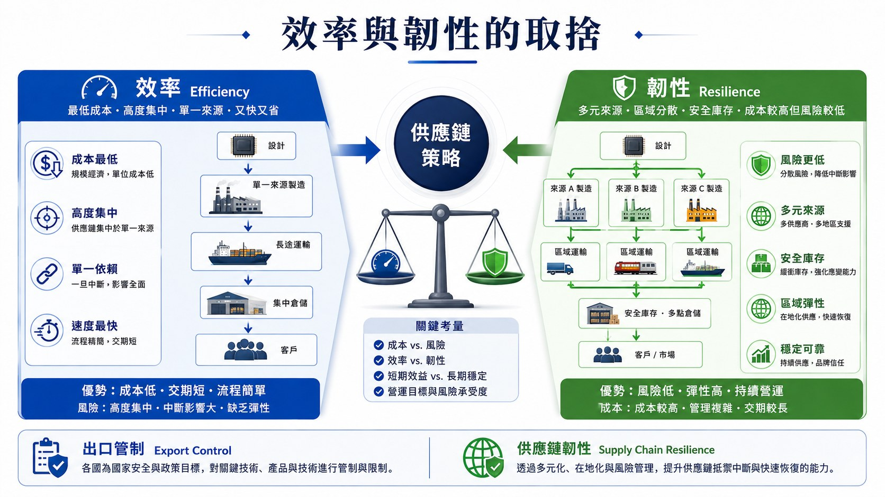
企業必須依零組件替代難度、中斷機率與缺貨損失決定願意為韌性支付多少成本；關鍵程度愈高、替代時間愈長，第二來源、庫存或區域備援的必要性通常也愈高。
未來全球半導體供應鏈較可能形成高度互賴下的部分區域化：AI、先進運算與關鍵設備受到較嚴格的安全管理，成熟製程、一般電子產品與多數材料仍維持跨國交易。
全球供應鏈因此正由單純追求最低成本，轉向同時評估國家安全、供應韌性與地緣政治風險；其核心問題也從「在哪裡生產最便宜」擴大為「中斷發生時，系統能否繼續運作」。
參考文獻
Semiconductor Industry Association, & Boston Consulting Group. (2021). Strengthening the global semiconductor supply chain in an uncertain era. https://www.semiconductors.org/resources/strengthening-the-global-semiconductor-supply-chain-in-an-uncertain-era/
Miller, C.（2023）。晶片戰爭：矽時代的新賽局，解析地緣政治下全球最關鍵科技的創新、商業模式與台灣的未來》（洪慧芳譯）。天下雜誌出版。
太田泰彥（2022）。《半導體地緣政治學：解讀美中競合、台灣產業及全球供應鏈的未來》。野人文化。
Bureau of Industry and Security. (2022). Commerce implements new export controls on advanced computing and semiconductor manufacturing items to the People's Republic of China. U.S. Department of Commerce. https://www.bis.gov/press-release/commerce-implements-new-export-controls-advanced-computing-semiconductor-manufacturing-items-peoples
Bureau of Industry and Security. (2024). Commerce strengthens export controls to restrict China's capability to produce advanced semiconductors for military applications. U.S. Department of Commerce. https://www.bis.gov/press-release/commerce-strengthens-export-controls-restrict-chinas-capability-produce-advanced-semiconductors-military
National Institute of Standards and Technology. (2025a). CHIPS R&D funding opportunities. U.S. Department of Commerce. https://www.nist.gov/chips/chips-rd-funding-opportunities
National Institute of Standards and Technology. (2025b). CHIPS incentives funding opportunities. U.S. Department of Commerce. https://www.nist.gov/chips/chips-incentives-funding-opportunities
Ministry of Economy, Trade and Industry. (2025). Next-generation semiconductor manufacturer eligible for financial support under the Act on Facilitation of Information Processing selected. Government of Japan. https://www.meti.go.jp/english/speeches/press_conferences/2025/1121001.html
第六章 半導體企業的未來管理：人才、ESG與社會共榮
前幾章分別討論半導體產業結構、企業管理、台灣產業生態系與地緣政治。最後一章則聚焦未來：當AI、先進製程、先進封裝與全球製造持續擴張，半導體企業將同時面對人才不足、永續要求提高與跨國營運複雜度增加等問題。
這些課題已逐漸從支援性功能進入企業核心決策。人才決定技術能否落地，能源與水資源影響產能能否持續，海外設廠則考驗企業能否把既有技術、管理制度與文化延伸到不同國家。因此，未來半導體企業的競爭力將更明顯地取決於企業能否整合技術、人才、永續與全球管理能力。
6.1 人才競爭：工程、跨領域與全球人才同時成為關鍵
半導體產業的人才需求具有高度專業化特徵。IC設計需要電機、資訊、演算法與系統架構人才；晶圓製造需要製程、設備、材料、化學與工業工程專業；先進封裝與智慧製造又提高軟體、資料分析、自動化與AI人才的重要性。
全球半導體產業近年的擴張，使人才短缺逐漸成為共同問題。SIA與Oxford Economics估計，美國半導體產業至2030年仍可能存在數萬個技術職缺，其中包括技術員、工程師與電腦科學相關人才（Semiconductor Industry Association, 2023）。台灣則同時受到產業擴張、少子化及科技業間人才競爭影響，企業在製程、設備、研發與先進製造等職能的招募壓力持續提高。
未來缺口也不會只集中於傳統工程職位。隨半導體企業增加海外據點、建立第二來源並處理更複雜的供應風險，供應鏈規劃、採購、供應商管理、物流與風險管理的重要性明顯提升。這類職務需要理解產業結構、成本、交期與供應商能力，也要掌握出口管制、區域風險與跨國協作。相較製程與設備工程師，其缺口規模未必最大，但在全球化半導體企業中的管理價值正快速增加。
另一項趨勢是跨領域人才的重要性提高。半導體製造愈來愈數位化，製程工程師需要理解資料分析，供應鏈人員需要掌握風險與資訊系統，管理者也需要理解基本技術邏輯。企業因此更重視能夠連結不同專業的人才，而不只是在單一領域累積深度。
台積電的全球擴張也使人才管理從台灣本地培育逐漸走向全球配置。公司截至2025年底全球員工已超過9萬人，並持續在不同據點建立工程、營運及管理團隊（TSMC, 2026）。跨國發展也帶來語言、文化與勞動制度差異。台積電近年推出跨文化學習與全球人才發展方案，目的即在於讓不同國籍員工能在共同的製造與管理標準下協作。
因此，未來半導體人才管理將同時處理三項問題：專業人才是否充足、不同職能能否有效協作，以及全球人才能否被整合進同一組織。 人才供給也將從企業人資議題進一步成為產業長期成長的重要限制條件。
6.2 ESG進入核心營運：能源、水資源與供應鏈永續
半導體製造具有高度資源密集的特性。先進晶圓廠需要大量電力維持製程設備、無塵室與廠務系統，同時使用大量超純水、化學品與特殊氣體。因此，能源、碳排放與水資源已逐漸成為實際的營運條件。
對台灣半導體業而言，這項課題尤其重要。製程節點持續進步、AI與高效能運算需求增加，使先進晶圓製造與封裝規模擴大，同時提高電力與資源需求。全球客戶與投資人對產品碳足跡、再生能源及供應鏈排放的要求也愈來愈明確。
台積電已提出2040年100%使用再生能源、2050年達成淨零排放的長期目標，並持續改善製程能源效率、再生能源採購與供應鏈減碳（TSMC, 2026）。對晶圓製造企業而言，這些目標會實際影響設備選擇、廠房設計、能源採購與資本支出。
水資源同樣直接影響產能。晶圓製程需要大量超純水清洗，因此企業必須提高回收率、使用再生水並降低單位產品耗水。化學品及材料管理則逐漸朝循環利用、減量及再資源化發展。
ESG也開始向供應鏈延伸。大型晶圓廠透過採購規範要求材料、設備與工程服務商提供碳排資料、環境管理與減量計畫，使永續能力逐漸成為供應商競爭條件之一。換言之，半導體公司的ESG績效已不再只取決於自身工廠，也與整體供應網絡的管理能力有關。
因此，未來的永續管理會更加接近企業核心營運。能源價格影響成本，水資源影響產能，碳規範影響客戶與市場，而職業安全與人才照顧又與留才及企業聲譽連結。半導體企業需要把ESG直接納入製造、採購、資本投資與風險管理。
6.3 從台灣走向全球：台積電的跨國合作與社會共榮
台積電近年的全球布局提供了一個觀察半導體企業國際化的重要案例。其海外設廠同時具有客戶服務、供應鏈韌性、區域市場連結與全球製造配置等意義。對企業而言，真正困難的部分在於如何把台灣累積數十年的技術、製造能力與管理制度延伸到新的國家。
6.3.1 海外布局與區域合作
美國是目前台積電全球布局中規模最大的海外投資之一。亞利桑那第一座晶圓廠已於2024年第四季開始4奈米量產，第二座廠規劃3奈米及更先進製程，第三座也持續推進。公司並規劃增加晶圓製造、先進封裝與研發能力，逐步在當地形成更完整的半導體製造基地（TSMC, 2026）。
日本熊本則呈現另一種合作模式。JASM第一座晶圓廠已投入量產，並結合Sony、DENSO等日本企業及地方人才體系，使台積電製造能力與日本既有的汽車、材料、設備產業建立更緊密連結。第二座廠的推進，也顯示熊本基地正由單一晶圓廠逐步形成區域性的半導體聚落。
德國德勒斯登廠則聚焦汽車與工業應用，與歐洲產業結構相呼應。這些海外據點並未使用完全相同的設廠模板，而是依據客戶、市場、製程需求與地方產業條件採取不同合作方式。
海外擴張也未改變台灣在台積電製造體系中的核心位置。公司仍持續於台灣投資先進製程與先進封裝。整體方向因此更接近「以台灣為核心、建立多區域製造能力」的全球布局。
這種轉型使企業管理的複雜度提高。技術移轉、品質一致性、人才培訓、供應商在地化與跨文化領導，都會影響海外據點能否複製台灣工廠的營運能力。全球化對台積電而言，因此同時是一項產能布局與組織能力的測試。
6.3.2 社會共榮與全球共融
大型晶圓廠長期進駐一個地區後，與地方社會的關係也會逐漸加深。工廠需要當地人才、教育體系、交通、水電與供應商，地方社會則期待企業帶來就業、教育資源與產業升級。這種互動構成半導體企業「社會共榮」的重要基礎。
台積電在熊本與當地大學及教育機構合作培養半導體人才，在美國亦持續推動STEM教育及社區合作。德國等新據點則透過跨國訓練建立本地工程團隊。這些做法將企業投資與地方人才培育連結，有助於海外據點形成較穩定的長期人力來源。
共榮的概念也延伸到公司內部。台積電將全球共融職場定位為人才發展的一部分，強調不同性別、年齡、國籍、文化與背景的員工都能將自身經驗帶入工作，並透過員工資源團體與共融活動強化組織連結。 隨員工組成日益國際化，這種共融能力也會影響企業能否吸收並留住不同國家的專業人才。
因此，台積電的全球化逐漸呈現兩個相互連結的方向：一方面把台灣累積的製造能力延伸到海外，另一方面在新的地區重新建立人才、供應商與社會關係。當海外據點逐漸成熟，跨國營運能力與地方合作深度將成為其全球競爭力的重要部分。
6.4 半導體產業未來展望：技術成長與管理複雜度同步提高
半導體仍是AI、資料中心、高效能運算、自動駕駛與智慧製造的重要基礎。未來技術競爭也不再只比較單一GPU或製程節點；AI系統效能需要GPU／AI Accelerator + HBM + Interconnect + Advanced Packaging共同配合。GPU提供運算、HBM提供高頻寬記憶體，Interconnect負責高速資料傳輸，先進封裝則把不同晶片以更短距離整合。任何一環跟不上，都可能成為整體系統瓶頸。
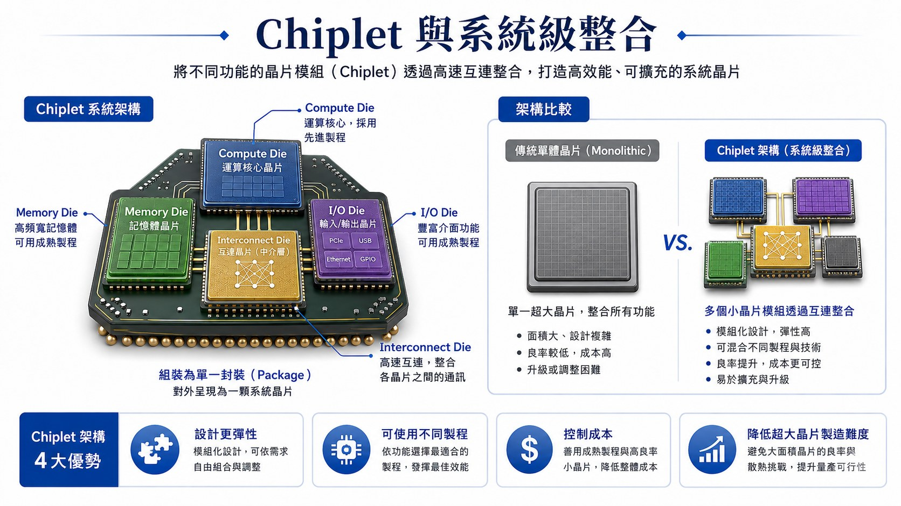
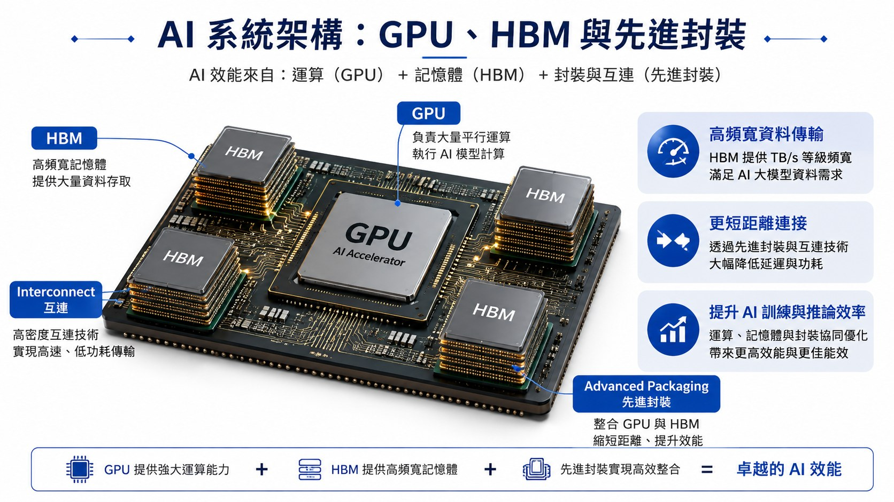
這種系統化發展也重新定義產業所需要的專業。製程、設備與IC設計仍是核心職能，但供應鏈管理、營運管理、策略、財務、人力資源、ESG與國際管理的重要性同步提高；工程人才也愈來愈需要專案管理、跨部門協調與商業判斷能力。
AI、全球設廠、地緣政治與永續轉型持續創造新的管理問題，也帶來新的職能需求：供應鏈風險提高採購與風險管理的重要性，海外生產增加跨文化與全球營運需求，減碳與能源限制則使ESG進入核心決策。
半導體競爭因此正由Chip Competition逐步走向System Competition。產品層級需要Logic、Memory、Packaging與Interconnect共同整合；企業層級需要Technology、Talent與Operations；產業與全球層級則還要結合Suppliers、Universities、Infrastructure、Resilience與Sustainability。未來真正的競爭力，將取決於能否把技術、人才、資源、生態系與全球營運整合成可持續運作的系統。
參考文獻
Semiconductor Industry Association. (2023). Chipping away: Assessing and addressing the labor market gap facing the U.S. semiconductor industry.https://www.semiconductors.org/chipping-away-assessing-and-addressing-the-labor-market-gap-facing-the-u-s-semiconductor-industry/
SEMI. (2026). SEMI首次年度會員調查出爐：台灣半導體產業供應鏈布局、人才培育與低碳轉型現況全面揭示. https://www.semi.org/zh/node/170301
Taiwan Semiconductor Manufacturing Company. (2026). 2025 annual report. https://investor.tsmc.com/static/annualReports/2025/english/index.html